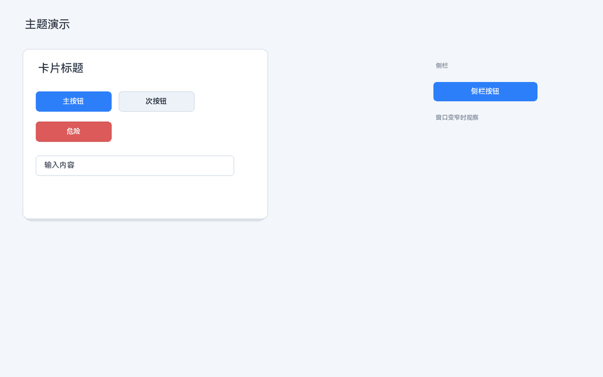
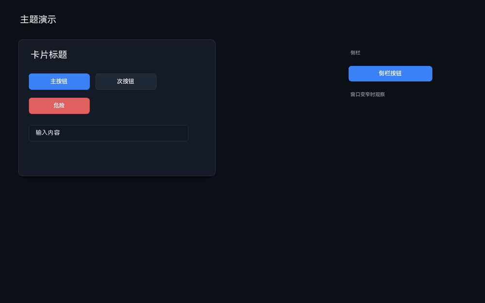

32 其它说明
32.1 常见主题配方
| 目标 | 选择器 | 主要声明 |
|---|---|---|
| 主按钮 | button.primary | background、text-color、border-radius |
| 次按钮 | button.secondary | background 浅灰、border-color |
| 危险按钮 | button.danger | background 红、text-color 白 |
| 卡片 | panel.card | background、border-color、border-radius、box-shadow |
| 输入框 | edit-box | background、border-color、content-padding |
| 标题 | label.title | font-size、text-color、font-style |
| 侧栏紧凑 | panel.sidebar + 容器条件 | font-size、content-padding |
| 深色模式 | 变体 dark | 背景/文字变量覆盖 |
32.2 内置主题模板与独立加载
设计器自带两套可直接使用的项目主题模板：明亮和暗黑。模板是独立的 JSON 文件，不依赖当前画布结构；应用后只设置项目主题，不会删除控件、改布局或清空已分配的类。
| 菜单 | 作用 |
|---|---|
| 编辑 → 应用明亮主题模板 | 加载 themes/theme_light.json 并设为当前项目主题 |
| 编辑 → 应用暗黑主题模板 | 加载 themes/theme_dark.json 并设为当前项目主题 |
| 编辑 → 加载主题文件… | 选择任意主题 JSON，独立应用，不必先打开主题管理器 |

应用明亮主题模板：浅色背景、白色卡片、蓝色主按钮

应用暗黑主题模板：深色背景、深色卡片、亮色按钮
- 打开一个已有工程，或先新建一个带按钮/面板的布局。
- 选择 或“应用暗黑主题模板”。
- 如果预览已经打开，应用模板后会自动重建预览；否则按 F5 打开预览查看效果。
- 需要微调时，打开“主题…”或“主题 JSON…”继续修改；模板会成为当前
.csd的项目主题。
模板文件位于 exe 同目录的 themes/theme_light.json 和 themes/theme_dark.json（源码在仓库 themes/）。用户可以复制一份修改，或通过“加载主题文件…”应用自己的主题文件。
模板只覆盖主题规则，不会覆盖控件的显式属性。如果按钮/面板在属性面板里已经显式设置颜色，模板不会改变它；“类”和“显式属性”的优先级仍按 15/18 的规则。
设计器放置控件时写入的默认外观不算“用户显式样式”。应用模板后，预览/导出会自动忽略按钮
#FAFAFA、标签 #333333 这类设计器缺省颜色，让模板生效；你手动改过的颜色仍会保留并继续覆盖模板。设计画布本身仍显示设计态默认外观，请以预览/导出为准。“加载主题文件…”接受直接的主题对象，也接受带
"theme" 字段的布局 JSON；如果文件不是合法 JSON 对象，状态栏会提示，当前主题不变。预览已经打开时，通过菜单应用模板会自动重建预览；直接修改主题 JSON 后仍建议刷新预览。32.3 设计器自身 UI 主题
设计器界面（菜单、工具箱、属性面板）使用另一份主题文件：exe 同目录的 designer_theme.json。它和项目主题完全分离：
- 修改项目主题不会改变设计器界面；
- 修改设计器主题不会影响用户画布、预览和导出；
- 源码文件在
layouts/designer_theme.json，构建时复制到输出目录； - 修改后使用 热重载。
文件缺失或 JSON 非法时只输出诊断，不阻止启动。
32.4 排查：为什么主题没生效
- 看的是设计画布还是预览？ 当前设计画布主要显示显式样式和设计态；请在预览或导出界面看完整主题。
- 控件有类吗？ 规则
button.primary需要控件 classes 含primary。 - 选择器写对了吗？ 不支持空格后代选择器、逗号分组、属性选择器和
!important。 - 属性面板是否显式设过颜色？ 显式属性优先于主题；清除显式覆盖或改用类统一管理。
- 作用域对吗？ 媒体/容器/变体规则只在对应作用域和条件命中时生效。
- 规则保存了吗？ 修改已有规则后点“应用”或切换到别的规则；不要误点“新增规则”。
- 是否用了变量？ 检查
var(--name)拼写和变量是否存在；未定义变量会回退。 - box-shadow 是合法 JSON 对象吗？ 管理器的 box-shadow 字段需要对象文本。
32.5 当前限制
- 设计画布不是项目主题的完整预览；以预览/导出为准。
- 可视化表单覆盖常用字段；复杂状态、变量引用、变体内的媒体/容器需要“主题 JSON…”。
- 不支持 CSS 后代/子选择器、属性选择器、逗号分组、
!important和opacity。 - 主题不改变控件矩形；内边距只影响内容区。
content-padding对 ListView/TreeView 的滚动内容区和部分自绘控件不承诺完整可用。- 当前管理器只能追加类，不能删除类；移除类请编辑控件
classes。 :selected当前近似使用 pressed 通道。